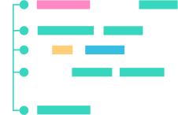

A área de programação é hoje muito extensa e proporciona uma profissionalização interessante aqueles que se dedicam a estudar mesmo sem cursos superiores. Nesse período de incerteza e de avanço tecnológico, isolamento social e pandemia muitas dúvidas foram geradas no coração de jovens que querem decidir sua carreira e muito optaram, e estimulamos aqueles que querem fazer, pelo desenvolvimento de sistemas/tecnologia da informação. Ao mesmo tempo existem poucas ferramentas interativas que possibilitem o entendimento e catequese da palavra de forma didática e ordenada. Por isso esse projeto nasce da necessidade de incentivar aqueles que querem aprender a programar dentro da Igreja, com projetos que serão funcionais e úteis.
FUNDAMENTOS.DEV

Criamos documentos para direcionamento do aprendizado com metas e links relevantes.
Curadoria do crescimento. Acompanhamos o crescimento e desenvolvimento, direcionando conteúdo se necessário e tirando dúvidas.
Algumas vezes fazemos isso copiando por Ligação de vídeo/streaming
Mas a maioria das vezes é Comentando código, ou revisando-os
Ambiente colaborativo
Já dizia minha professora,
“a dúvida do coleguinha pode ser a sua”, por isso criamos uma
ambiente de perguntas e respostas para facilitar o aprendizado e
retirada de dúvidas